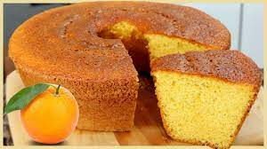

Bolo de laranja que faz bem

Ingredientes
- 4 ovos (clara + gema)
- 70 g de açúcar demerara
- 100 ml de sumo de laranja
- Raspas de laranja
- 50 g de óleo de coco
- 70 g de mix de farinha sem glúten
- 70 g de farinha de amêndoas
- 10 g de fermento químico
Modo de preparo
- Bater as claras em neve com o açúcar em ponto de bico firme. Reservar.
- Bater as gemas com o sumo, as raspas de laranja e o óleo de coco. Adicionar as farinhas e misturar.
- Adicionar metade das claras à massa, misturando delicadamente. Acrescentar o restante e por fim o fermento e envolver a massa suavimente.
- Assar a 180º C por 30 a 40 minutos.
Observação
Receita do curso "Doce que faz bem".